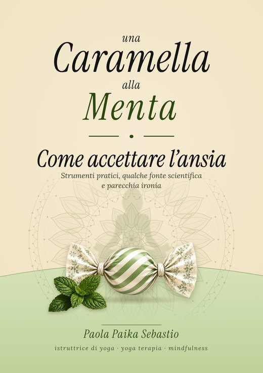

C'è una pagina scritta apposta per questo momento. Si legge in un minuto.
Il progetto
Perché una caramella alla menta?
Ci sono giorni in cui non servono grandi discorsi. Serve qualcosa di semplice. Una pagina. Un esercizio. Un respiro. Una parola che arrivi al momento giusto.
È da qui che nasce questa collana. Libri pensati per accompagnare, non per insegnare. Per stare accanto, non davanti.
La menta non risolve i problemi, ma li fa sembrare più freschi. Per questo la prendiamo ogni giorno.
Se serve una mano vera
Dove chiedere aiuto
Le strade che esistono davvero in Italia, in ordine: prima quelle gratuite, poi quelle che costano. Linee d'ascolto aperte stanotte, cosa fa il servizio pubblico per l'ansia, e come si controlla in un minuto se chi hai davanti è davvero uno psicoterapeuta.
Ogni riga è verificata sulla fonte ufficiale, che trovi indicata accanto.
Quando serve staccare
Metti in pausa il mondo
Un posto dove non c'è niente da risolvere. Dentro c'è un barattolo di caramelle da pescare una alla volta: a volte ti propongono qualcosa da fare, a volte sono solo una curiosità o una frase. Niente da completare, niente da misurare, nessun punteggio.
I libri
La collana è appena iniziata
Ogni nuovo volume aggiunge un tassello a un percorso dedicato al benessere emotivo. Questi sono quelli che ci sono oggi.

- Una caramella alla menta Il racconto. Quasi quarant'anni di ansia, attacchi di panico e piccoli passi avanti. Cartaceo · anche in eBook
- Il quaderno Gli esercizi del libro, su un percorso guidato di ventuno giorni. Perché farli da soli è un'altra cosa.
- Sul serio, ridendo Diario del cambio di rotta, senza date e senza sensi di colpa. Tredici gusti di caramella, quattro settimane ciascuno, cinquantadue settimane in tutto.
- Fuori dai bordi Mandala da colorare, disegnati a mano uno per uno. Stampati su un lato solo del foglio, così i pennarelli non trapassano.
- Agenda 2027 Un'agenda spensierata, che dell'ansia non parla mai. Un'illustrazione e una battuta per ogni mese.
Una pagina da tenere in borsa
La pagina che si legge quando si sta male, in PDF, pensata per essere stampata e piegata: la tieni nel portafoglio, nel cassetto, sul frigorifero. È gratis e non devi comprare niente. Si scarica subito.
Un foglio A4 da piegare in quattro. Non chiede niente in cambio: né un indirizzo, né un'iscrizione.
Chi scrive
Mi chiamo Paola. Convivo con l'ansia da quasi quarant'anni, e a un certo punto ho smesso di aspettare che passasse. Ho cominciato a scrivere perché il libro che cercavo non esisteva.
La mia storia è nei libri. Qui ci sono le cose che servono.